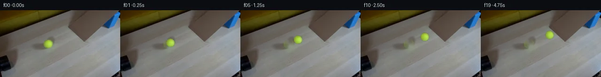

![首帧]()

Round 00
2026-11-05T05:57:40.746296+00:00像素候选变化代码 +250/−0inspection 更新
pixels 7dd88d19b96c9538 · code 22474f9ef47e9b81
查看本轮 generate.py 真实 diff
--- previous/generate.py
+++ current/generate.py
@@ -0,0 +1,250 @@
+#!/usr/bin/env python3
+"""
+PixelWorld-Text case 0019: a yellow-green tennis ball rolls straight out of a
+black pipe (lower left) onto a cardboard ramp and climbs diagonally up-right,
+decelerating as it goes uphill.
+
+All pixels are produced locally with numpy / OpenCV operations from
+first_frame.png:
+
+ * The ball in frame 0 is localized with a colour threshold and a least
+ squares circle fit (sub-pixel centre and radius).
+ * A static background is obtained once by TELEA-inpainting the ball disc;
+ matched camera/film grain is synthesised inside the restored disc so the
+ revealed ramp keeps the same texture. Numeric checks found NO cast
+ contact shadow outside the disc (k = 1.0 everywhere r > 9.6), so no
+ shadow sprite is moved.
+ * Inside the disc the true ball colour is separated from the background by
+ iterative, coverage-weighted unmixing:
+ C = a * S + (1 - a) * Bg
+ yielding a smooth fixed sphere-shading field S (gaussian radial bumps x
+ angular harmonics 0..2, least squares) and an empirical radial coverage
+ profile a(r).
+ * The high-frequency felt mottle M = S - Shade is stored on the ball disc
+ and, per frame, sampled through a 3D rotation of the sphere about the
+ in-image axis perpendicular to the travel direction (no-slip rolling,
+ theta = -s / R), while the shading field stays fixed in screen space.
+ * Each frame composites the rotated ball over the static background with
+ sub-pixel (2x2) alpha coverage. Frame 0 is forced to equal the input
+ pixels exactly.
+
+Outputs are written through artifact_io.save plus transition_check.png.
+"""
+from pathlib import Path
+import numpy as np
+from PIL import Image, ImageDraw
+import cv2
+from scipy import ndimage
+
+import artifact_io
+
+CASE = Path(__file__).resolve().parent
+N_FRAMES, H, W = 20, 144, 256
+FPS = 4.0
+
+# ---------------------------------------------------------------- geometry --
+orig = np.array(Image.open(CASE / 'first_frame.png').convert('RGB'))
+assert orig.shape == (H, W, 3)
+f = orig.astype(np.float32)
+yy, xx = np.mgrid[0:H, 0:W].astype(np.float32)
+Rc, Gc, Bc = f[:, :, 0], f[:, :, 1], f[:, :, 2]
+
+# ball mask (yellow-green chartreuse felt)
+ballmask = (Rc > 110) & (Gc > 140) & (Bc < 110) & (Gc - Bc > 60) & (Rc - Bc > 40)
+edge = ballmask & ~ndimage.binary_erosion(ballmask, iterations=1)
+er, ec = np.where(edge)
+A = np.c_[2 * ec, 2 * er, np.ones(len(er))]
+sol, *_ = np.linalg.lstsq(A, ec ** 2 + er ** 2, rcond=None)
+CX0, CY0 = float(sol[0]), float(sol[1])
+rr = np.hypot(xx - CX0, yy - CY0)
+ang = np.arctan2(yy - CY0, xx - CX0)
+print(f'ball centre = ({CX0:.3f}, {CY0:.3f})')
+
+# travel axis along the ramp (measured ramp band direction dy/dx ~ -0.429)
+UX, UY = 0.9191, -0.3939
+AXIS = np.array([-UY, UX]) # rolling axis in the image plane
+
+# ----------------------------------------------------------- static scene --
+DISC = 9.6
+disc = rr < DISC
+bg = cv2.inpaint(orig, disc.astype(np.uint8) * 255, 7,
+ cv2.INPAINT_TELEA).astype(np.float32)
+
+# camera grain: high-frequency residual of the original vs. a 5x5 median,
+# measured on a feature-light ring near the ball; correlated 2x2 blocks.
+med = cv2.medianBlur(orig, 5).astype(np.float32)
+gr = (rr > 14) & (rr < 34)
+sig = np.array([(f[:, :, k] - med[:, :, k])[gr].std() for k in range(3)], np.float32)
+rng = np.random.default_rng(7)
+gn = rng.normal(0, 1, (H, W, 3)).astype(np.float32) * sig[None, None, :]
+gk = gn.reshape(H // 2, 2, W // 2, 2, 3).mean(3, keepdims=True)
+gn = 0.55 * gn + 0.45 * np.broadcast_to(gk, (H // 2, 2, W // 2, 2, 3)).reshape(H, W, 3)
+genv = np.clip((DISC - 0.5 - rr) / 0.9, 0, 1) # fade before mask edge
+BASE = np.clip(bg + gn * genv[:, :, None], 0, 255)
+
+# --------------------------------------------- iterative colour unmixing ----
+region = disc
+rs0, an0 = rr[region], ang[region]
… diff truncated; 163 more lines …